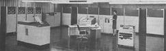

Burroughs B5500 Emulator Hosting Site
This site hosts the current version of the retro-B5500 emulator, an implementation of the legendary Burroughs B5500 that runs in a web browser.

Main Links
- B5500 Home Page
The home page from which you can start the emulator and open the B5500 Operations Console.
- Help & Getting Started
A menu of information resources to assist you in setting up and operating the emulator.
- Open Source Project
Source code, documentation, and other developer resources for the retro-B5500 emulator project at Google Code.
- Project Blog
The retro-B5500 project blog.
- Project Forum
The retro-B5500 project forum. The forum is open to everyone, but you must register first.
- Emulator Utilities
A set of utilities that run in your web browser for setting up and inspecting the emulator environment.
- Releases
Recent releases of the emulator files, packaged as one .zip file per release.
- B5500 System Software
Tape images of B5500 system software for the Mark XIII (1971) software release. You must download at least the SYSTEM tape image in order to set up the emulator in your browser.
- Burroughs Documents at bitsavers.org
A collection of scanned copies of original Burroughs manuals and other reference materials for the B5500 system.
Revised
2015-02-08